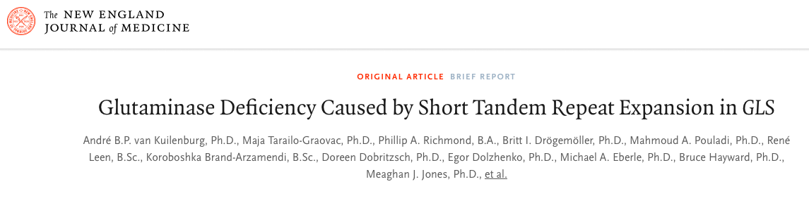
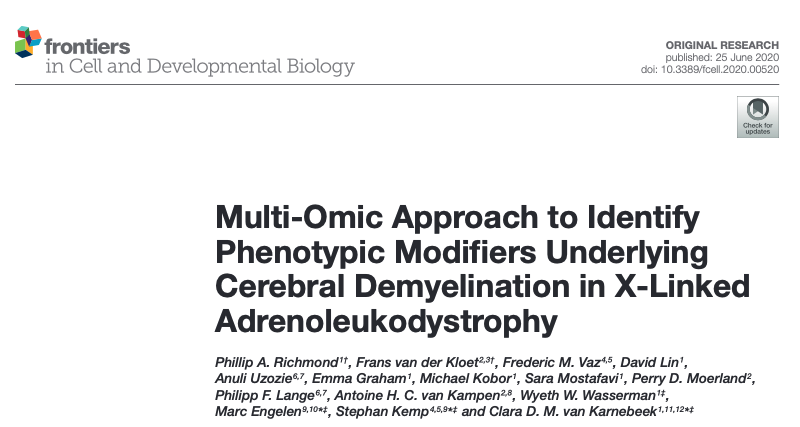
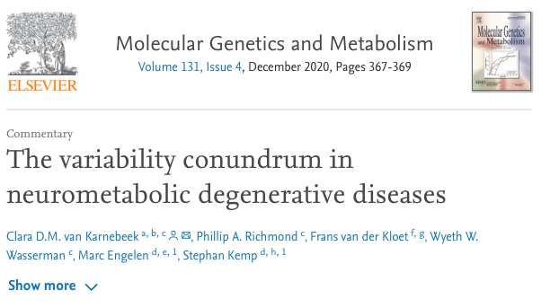
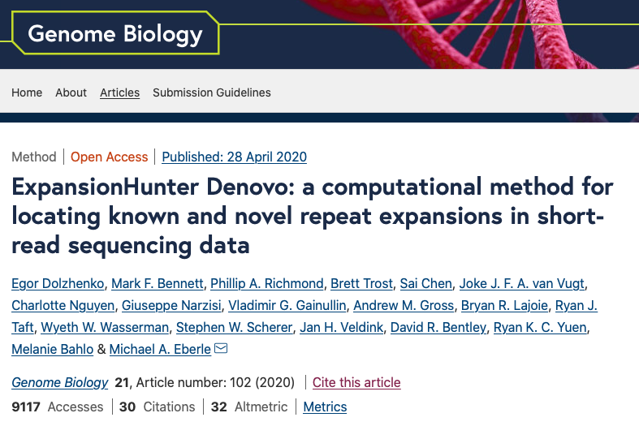
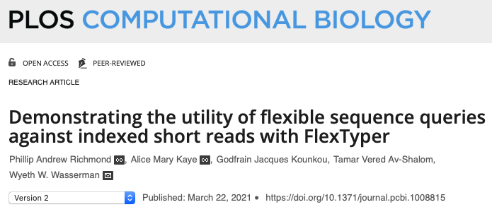
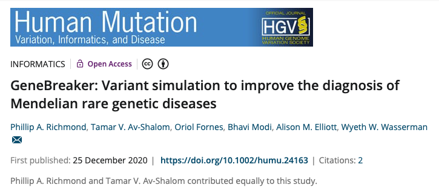
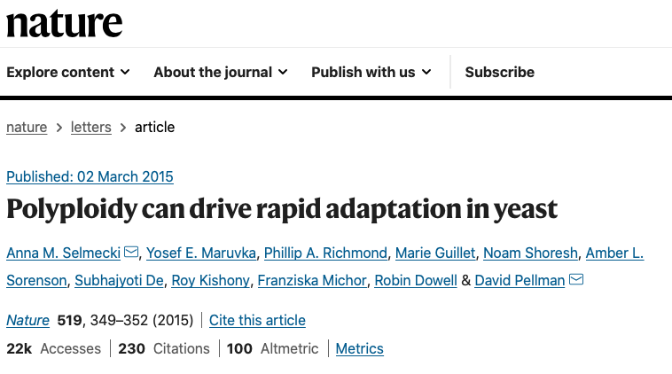
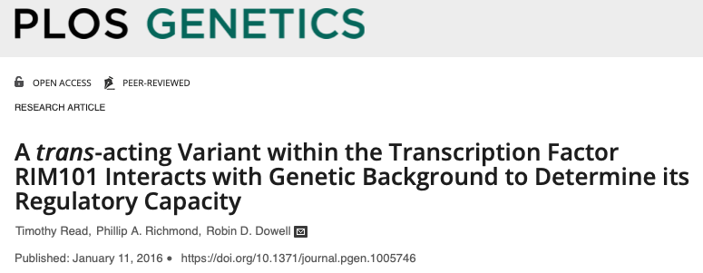

About Me
My name is Dr. Phillip Richmond, and I have a passion for precision health research. I was first exposed to high throughput sequencing and genomics in 2010 as an undergraduate researcher in Robin Dowell's lab, and I immediately knew I had found my calling in the world of genomics and bioinformatics. Fast forward to today, and my skills in bioinformatics lead to clinical answers, and in some cases life changing discoveries, for patients and their families.
In my free time you will find me outside with my dogs, Sherlock and Rosie.
Education
2015-2020: PhD in Bioinformatics from the University of British Columbia, under supervision of Dr. Wyeth Wasserman.
My thesis research focused on expanding the utility of whole genome sequencing in the diagnosis of rare genetic diseases, and you can read my thesis here.
During my thesis I investigated unsolved rare genetic disease cases, discovered a novel tandem repeat expansion, helped to build tools for variant calling and simulation, and investigated candidate modifying markers leading to variable phenotypes seen in X-linked Adrenoleukodystrophy.
2008-2012: BA in Molecular, Cellular, & Developmental Biology summa cum laude from the University of Colorado, Boulder.
My undergraduate thesis work focused on identifying the genotypic effects of polyploidy on the adaptation of saccharomyces cerevisiae when subjected to metabolic stress.
Research Experience
2020-Current: Staff Scientist, BC Children's Hospital Research Institute.
In this role I am developing the Precision Health Initiative, under supervision of Dr. Stuart Turvey. In this role I focus on three main objectives including 1) Coordinating computational infrastructure solutions for researchers at BCCHR, 2) Teaching clinical and research audiences about precision health technology including hands-on exposure to data analysis, and 3) Analysis of unsolved rare genetic disease cases within the BCCHR Rare Disease Discovery Hub, typically with the use of multi-omics approaches.
2012-2015: Professional Research Assistant, University of Colorado, Boulder
In this role I supported diverse projects spanning model organism genomics, and led training initiatives at the Biofrontier's Institute, under supervision of Dr. Robin Dowell-Deen. Projects included regulatory genomic studies in yeast, directed evolution studies in yeast, behavioural genetics of alcoholism in mice, and histone de-acetylase cancer therapeutic epigenome profiling in tumor-derived cell lines.
Publications
To read more about my published works, head over to the Publications page, or visit my Google Scholar.
Teaching

Under construction, May 2022
Clinical
BC Children's and Women's Hospital Medical Genetics Resident Academic Half-day. ”Hands-on Introduction to Rare Disease Genomics”. December 10th, 2021.
Description: This hands-on activity covers a brief review of exome sequencing for the diagnosis of rare genetic diseases, followed by a hands-on activity where participants will work through a mock rare disease case and present their candidate gene in a clinical round table format. The ses- sion concludes with a lecture on next steps for ”negative” exome reports.
Attendees: 5
Delivery: 30 min lecture, 1 hour activity, 45 min round-table presentations, 45 min lecture.
UBC Master's in Genetic Counselling Training Program plus 3rd year Genetics Resident. ”Genome Analysis Module”. November 1st-19th, 2021.
Description: This is the second version of a hands-on module teaching genetic counselling students how to go from raw data to a diagnosis in the context of rare disease genomics. Students are assigned a case with raw sequencing data, and they learn Linux, high performance computing, short-read mapping/variant calling/visualization, and gene prioritization. They then present their candidate gene in a clinical round table format. The hands-on nature of this module relies upon access to high performance computing, herein provided by BC Children's Hospital Research Institute.
Attendees: 7
Delivery: Nine 2-hour sessions, in person.
Content: https://phillip-a-richmond.github.io/GenomeAnalysisModule/
Canadian Allergy and Clinical Immunology Distributed half-day. ”Hands-on Introduction to Rare Disease Genomics”. September 1st, 2021.
Description: This is a hands-on activity that starts with a lecture about the basics for rare disease genomic analysis (described above). Then the participants split into groups of 10 and get assigned a case with an Exomiser Output HTML file that they then download, and navigate to identify the causal variant/gene for their case. In the last hour, participants will present their top 2 candidate genes to the rest of the group, with the goal of unanimously agreeing on the diagnosis for each case.
Attendees: 40
Delivery: 1-hour lecture, 1-hour activity, 1-hour group presentations. Online via Zoom
BC Children's and Women's Hospital Paediatric Sub-specialty Academic Half-day. ”Introduction to Rare Disease Genomics”. June 4th, 2021.
Description: Lecture about the basics for rare disease genomic analysis, including how the data is processed and presented/communicated, the databases available online for deeper investigations of candidate genes/variants, and some options for what you can do next when there is a ”variant of uncertain significance” as the only reported variant for a case.
Attendees: 35
Content: 1-hour lecture. Online via Zoom.
UBC Master's in Genetic Counselling Training Program plus 3rd year Genetics Resident. ”Genome Analysis Module”. November 4th-18th, 2020.
Description: This is the first version of a hands-on module teaching genetic counselling students how to go from raw data to a diagnosis in the context of rare disease genomics. Students are assigned a case with raw sequencing data, and they learn Linux, high performance computing, short-read mapping/variant calling/visualization, and gene prioritization. They then present their candidate gene in a clinical round table format. The hands-on nature of this module relies upon access to high performance computing, herein provided by BC Children's Hospital Research Institute.
Attendees: 6
Delivery: Five 4-hour sessions. Hybrid in-person and online.
Content: https://phillip-a-richmond.github.io/GenomeAnalysisModule/
Publications
This is a selection of some of my favourite publications where I played a major/lead role, split into 3 categories below.
For a full list of publications, please visit my Google Scholar
Medical Genetics, Genomics, and Rare Disease

Glutaminase Deficiency caused by Short Tandem Repeat Expansion in GLS (co-first)
This was a collaborative discovery involving biochemical experts, medical geneticists, molecular biologists, and bioinformaticians (most importantly of course). We found this tandem repeat expansion to be causal for repression of GLS expression, leading to a multitude of neurodevelopmental and movement-based phenotypes.
Andre BP van Kuilenburg*, Maja Tarailo-Graovac*, Phillip A Richmond*, Britt I Drogemoller, Mahmoud A Pouladi, Rene Leen, Koroboshka Brand-Arzamendi, Doreen Dobritzsch, Egor Dolzhenko, Michael A Eberle, Bruce Hayward, Meaghan J Jones, Farhad Karbassi, Michael S Kobor, Janet Koster, Daman Kumari, Meng Li, Julia MacIsaac, Cassandra McDonald, Judith Meijer, Charlotte Nguyen, Indhu-Shree Rajan-Babu, Stephen W Scherer, Bernice Sim, Brett Trost, Laura A Tseng, Marjolein Turkenburg, Joke JFA van Vugt, Jan H Veldink, Jagdeep S Walia, Youdong Wang, Michel van Weeghel, Galen EB Wright, Xiaohong Xu, Ryan KC Yuen, Jinqiu Zhang, Colin J Ross, Wyeth W Wasserman, Michael T Geraghty, Saikat Santra, Ronald JA Wanders***, Xiao-Yan Wen***, Hans
R Waterham***, Karen Usdin***, Clara DM van Karnebeek***. (2019), ”Glutaminase Deficiency Caused by Short Tandem Repeat Expansion in GLS”, New England Journal of Medicine 380(15) 1433-1441 (2020). (online at https://doi.org/10.1056/NEJMoa1806627). *Co-first author, ***Co- last author.

Multi-omic approach to identify phenotypic modifiers underlying Cerebral Demyelination in X-linked adrenoleukodystrophy (co-first)
This was a tour de force, a project where I was responsible for the WGS analysis, but ended up writing a story about candidate signals in the data, and a lack of power (despite having brother-pairs) for multi-omic discovery of biomarkers. Lessons were learned, and larger datasets are needed, but this can serve as a dataset for examining signals identified in independent projects.
Phillip A Richmond*, Frans van der Kloet*, Frederic M. Vaz, Antoine H.C. van Kampen, An- uli Uzozie, Philipp F. Lange, David Lin, Michael Kobor, Emma Graham, Sara Mostafavi, Perry Moerland, Wyeth W Wasserman***, Marc Engelen***, Stephan Kemp***, Clara van Karnebeek***. ”Multi-omic approach to identify phenotypic modifiers undelrying cerebral demyelination in X- linked adrenoleukodystrophy.” Frontiers in Cellular and Developmental Biology, 8, 520. (2020). (on- line at https://doi.org/10.1101/2020.03.19.20035063). *Co-first author, ***Co-last author.

The variability conundrum in neurometabolic degenrative diseases (co-first)
This article is a perspective commentary, following on the publication of our multi-omic study to resolve modifiers of X-linked Adrenoleukodystrophy (xALD).
Clara van Karnebeek*, Phillip A. Richmond*, Frans van der Kloet, Wyeth W. Wasserman, Marc Engelen, Stephan Kemp. ”The variability conundrum in neurometabolic degenerative diseases.” Molecular Genetics and Metabolism, (2020). (online at https://doi.org/10.1016/j.ymgme.2020.11.002). *Co-first author.
Genomic Software

ExpansionHunter De Novo (co-first)
This is a tool for calling large repeat expansions in short-read PCR-free whole genome sequencing datasets. This software excels at identifying large expansions, including non-reference repeat expansion-insertions. The tool was created in collaboration with co-first authors Egor Dolzhenko (Illumina) and Mark Bennett (WEHI).
Egor Dolzhenko*, Mark Benett*, Phillip A Richmond*, Brett Trost, Sai Chen, Joke JFA van Vugt, Charlotte Nguyen, Giuseppe Narzisi, Vladimir G Gainullin, Andrew M Gross, Bryan R Lajoie, Ryan J Taft, Wyeth W Wasserman, Stephen W Shcerer, Jan H Veldink, David R Bentley, Ryan KC Yuen***, Melanie Bahlo***, Michael A Eberle***. ”ExpansionHunter Denovo: A computational method for locating known and novel repeat expansions in short-read sequencing data”, Genome Biology, 21, 102 (2020). (online at https://doi.org/10.1186/s13059-020-02017-z). *Co-first author, ***Co- last author.

FlexTyper (co-first)
This paper was a journey, that started with the question: what if we could better query sequences from raw fastq files. With motivation in graph-based applications, population reference genome selection, and flexible reference-free analysis of short-read DNA sequencing data. Most of the coding done by Alice Kaye and Jacques Godfrain, most of the story telling, application, and algorithm development/testing by Alice Kaye and myself.
Phillip A. Richmond*, Alice M. Kaye*, Godfrain Jacques Kounkou, Tamar V. Av-Shalom, Wyeth W Wasserman. ”Demonstrating the utility of flexible sequence queries against indexed short reads with FlexTyper.” PLoS Computational Biology, (2021). (online at https://doi.org/10.1371/journal.pcbi.1008815). *Co-first author.

GeneBreaker (co-first)
GeneBreaker is a simulation framework for creating rare genetic disease scenarios. It enables simulation of diverse classes of variants, including novel user-created, or known pathogenic variants. The online webtool returns variants in VCF+PED format for downstream simulation and testing of automated analysis frameworks.
Phillip A. Richmond*, Tamar V. Av-Shalom*, Oriol Fornes, Bhavi Modi, Alison Elliott, Wyeth W. Wasserman. ”GeneBreaker: Variant simulation to improve the diagnosis of Mendelian rare genetic diseases.” Human Mutation, (2020). (online at https://doi.org/10.1002/humu.24163). *Co-first author.
Molecular Biology and Gene Regulation

Polyploidy can drive rapid adaptation in yeast
This paper includes my undergraduate thesis work, where I examined the genotypic effects of directed evolution on a ploidy-series (1N, 2N, 4N) of saccharomyces cerevisiae. This was my first foray into genomics, and I was responsible for variant calling, and genome signal identification (including aneuploidy estimation), for the evolved strains.
Anna M. Selmecki, Yosef E. Maruvka, Phillip A. Richmond, Marie Guillet, Noam Shoresh, Am- ber L. Sorenson, Subhajyoti De, Roy Kishony, Franziska Michor, Robin Dowell & David Pell- man. “Polyploidy can drive rapid adaptation in yeast”, Nature (519): 349-352, (2015). (online at https://doi.org/10.1038/nature14187).

This remains one of my favourite papers, a detailed investigation into the regulation of a single yeast promoter, influenced by divergence in evolution, using classical and creative next-generation genetics techniques. I led the genome analysis and bioinformatics for this project.
Timothy J Read, Phillip A Richmond, Robin D Dowell. (2016), “A trans-acting variant within the transcription factor RIM101 interacts with genetic background to determine its regulatory capac- ity”, PLoS Genetics 12(1): e1005746, (2016). (online at https://doi.org/10.1371/journal.pgen.1005746).